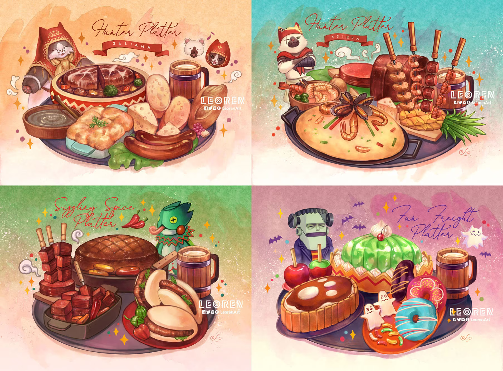

Monster Hunter: World Platter Recipies
Hope you like cheese

Meowscular Chef's Platter
Grammeowster Chef's Platter
Tepache
Skewers:
Meatball Skewer
Shrimp Skewer
Picanha Skewer
Chicken Skewer
6 indgredient platter:
Roast Beef
Paella
Lobster Bisque
/
Red Thai Curry Mussels
Pineapple (halved)
for garnish
Cheese
for garnish
4 indgredient platter:
Roast Chicken
Homemade Sausage
Cheese
for garnish
2 indgredient platter:
Baked fish
Tomato and pumpkin soup
Eggnogg
Beef Stew
Mushroom Soup
Mac and Cheese/Patato Gratin
Spicy Sausage
Baguette
Cheese
for garnish
Sources:
Binging with Babish
RICO
(1)
(2)
(3)
Phina
(1)
(2)